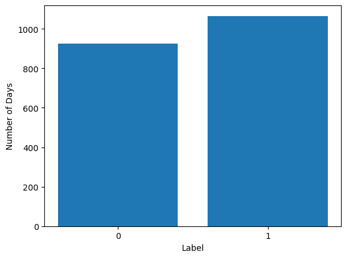
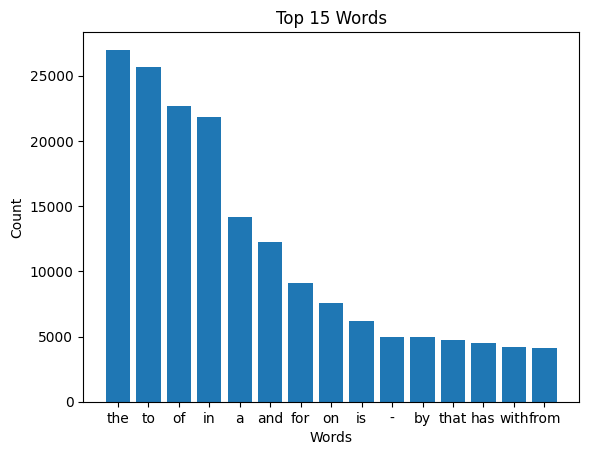
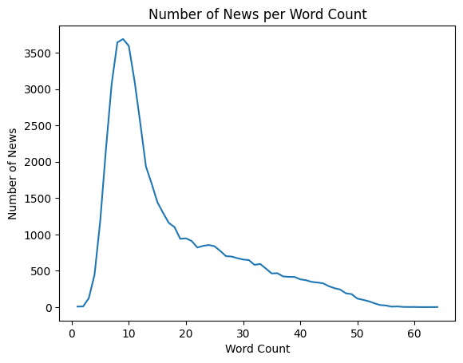
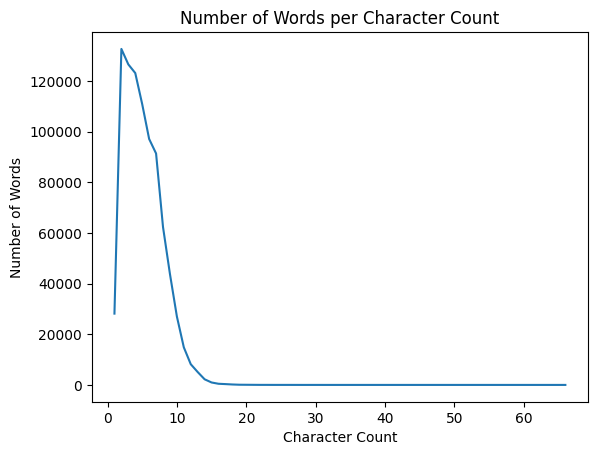
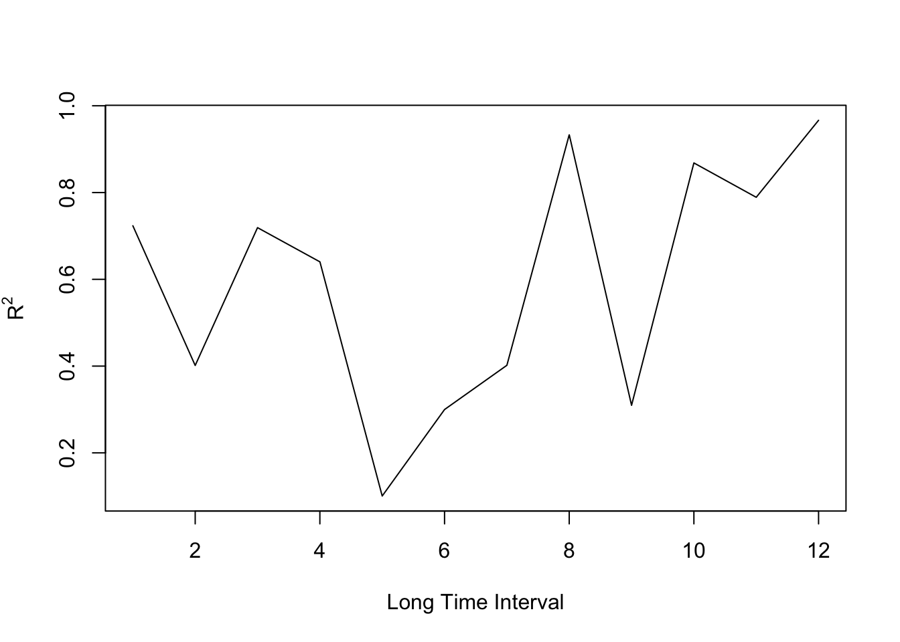
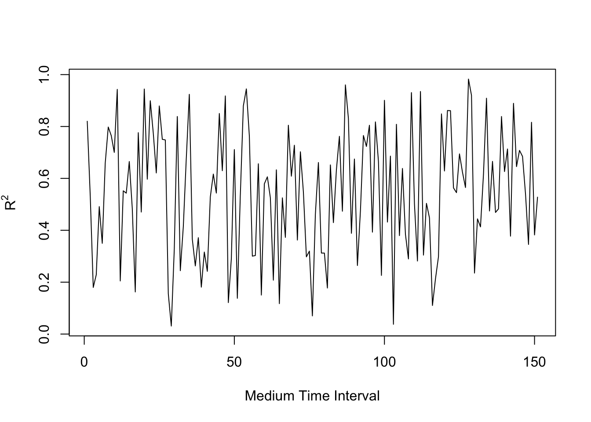
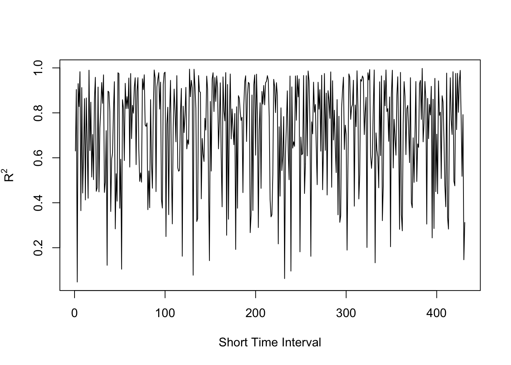

Predicting The Direction of DJIA Index Movement Based On Daily News Dataset And DJIA Index Time Series
Author
Nima Nikkhah
CS 670
Introduction
In this project, I have worked on the stock market data, i.e. DJIA index of stock exchanges in the United States. In particular, I want to evaluate the effect of Fundamental Analysis (in this project, only by considering important daily news) on predicting the value of DJIA index against the effect of Technical Analysis on predicting that index. Fundamental analysis focuses on the quality of an asset, while technical analysis looks at market trends as an indicator of value.
Dow Jones Industrial Average (DJIA) is a stock market index that tracks 30 large and prominent companies listed on Stock Exchanges in the United States. In this project, we use two different datasets for trying to predict the direction of the movement of this index.
Datasets
The first dataset that I have used consists of the Top 25 daily news from August 8th 2008 to July 1st 2016 as well as a binary value called Lable. This value is equal to 1, whenever the price of DJIA index at market close in the current date is equal or larger than the DJIA index at market close of the previous buisiness day, otherwise this value is zero. In this project, I am considering four different ways of defining the features (the input value of the learning method) based on the top 25 news of each day. These four feature sets are Top1 News, Top5 News, Top10 News, and Top25 News. The following table summarizes the values of this dataset. Also, This dataset can be found at https://www.kaggle.com/datasets/aaron7sun/stocknews.
Value
Description
Date
The date in which the Label value is calculated and the news are collected
Label
A binary value showing whether the DJIA index is increased/stayed the same (= 1) or it is decreased compared to the DJIA index of the previous buisiness day (= 0)
Top1 - Top 25
25 different columns containing the top 25 most important news of each day
The second dataset is the time series of DJIA index from January 3rd 2006 to December 29th 2017. The values of this dataset are Date, Open, High, Low, Close, Volume and Name. Among these values, only Date, Close, and Volume can be useful for the prediction tasks, since the rest of the values, except for Name which is an insignificant qualitative value, are highly correlated with the Close value (as we show in the visualization section). Among these correlated values, we choose Close to be compatible with the Daily News dataset. I also had to add a Label value to this dataset to be able to use the dataset for classification. This value is calculated the same way that the Label value of Daily News dataset is calculated. The following table summarizes the values of this dataset. Also, This dataset can be found at https://www.kaggle.com/datasets/szrlee/stock-time-series-20050101-to-20171231.
Value
Description
Date
The date in which the rest of DJIA index values are collected
Open
Price of the stock at market open
High
Highest price reached in the day
Low
Lowest price reached in the day
Close
Price of the stock at market close
Volume
Number of shares traded
Name
The stock’s ticker name
Label
A binary value that is calculated the same way that the Label value of Daily News dataset is calculated.
Questions
The main question that I will try to answer in this project is “which type of analysis can be a better fit for predicting the value of DJIA index?”, however, for answering this general question I need to work on answering more detailed questions listed below:
How often should we train our models? Is there any specific difference between the results of training the models with short time intervals (i.e. 7 days) of data and training them with medium time intervals (i.e. 20 days) of data and training them with long time intervals (i.e. 250 days) of data?
Which features are more significant for the prediction task? For the Daily News dataset, does the number of daily news (which can be between 1 to 25) that we choose for training our model affects the accuracy of the model? For the time series dataset, what combination of Date and Volume predictors can be most helpful?
Finally, is there an optimal training time interval? Specifically, is finding pattern more feasible among any of the short, medium, and long time intervals?
Visualization
The following plot shows the number of datapoints for each label value of DJIA Time Series dataset. The same code also is used for adding the Label column to the dataset.
The following heatmap plot shows that the only quantitative predictor that is not highly correlated with the Close value, is the Volume value which means except for the Date predictor, we should try using the Volume predictor for our regression and classification modeling, as well.
The following plot shows the entire time series data of DJIA Close value, as well as the linear regression model that is fitted to the entire DJIA Close range. We can see that the fitted model can predict the general increasing pattern of the time series, however, if we zoom in on any time interval, the linear model is not a good fit for estimating the value of DJIA Close.
p <-ggplot(tseries, aes(x=as.Date(Date), y=Close, group =1)) +geom_line() +xlab("Date") +scale_x_date(date_breaks ="20 month", date_labels ="%Y %b %d")p +geom_smooth(method ="lm")
The following plot is showing the number of datapoints for each label in the Daily News dataset. We can observe that this dataset, same as the Time Series dataset, is slightly imbalanced towards the “1” label. The difference is not significant enough to cause issues with the model training and to some extent is understandable since the cases in which the DIJA Close value stays the same are also considered part of the Label “1” datapoints.

Labels
The following plot shows that the Top-15 frequent words in the Daily News dataset are not useful words and cannot be used for estimating the impact of the news on DJIA index.

Top-15 Frequent Words
The following plot shows that most of the news in the Daily News dataset have a word count between 8 and 12 and a very few number of news have word count larger than 50.

Number of News per Word Count
The following plot shows that most of the words in the Daily News dataset have a character count between 2 and 8 and a very few number of words have character count larger than 10.

Number of Words per Character Count
Modeling - Classification for Time Series Dataset
For classifying the datapoints in DJIA Time Series dataset, I use two different methods, namely, Logistic Regression and KNN. For answering the first question (regarding the frequency of training), we consider three different sizes for training time interval. These sizes are 7 days (representing short time intervals), 20 days (representing medium time intervals), and 250 days (representing long time intervals). For each time interval size, We then train our model using the selected time interval and will test the model using the single datapoint that comes after the last training datapoint. For instance, for the 7-days time interval, when we train our model using the 5th datapoint until the 11th datapoint, we test the model using the 12th datapoint. We then calculate the number of false predictions (errors) in all of the scenarios (for each time interval size) and will calculate the accuracy of predictions using the calculated error. The following code generates these results for Logistic Regression model and using only the Date predictor.
monthly_error <-0for (i in2:2999){ glm.fit <-glm(Label ~ Date, data = new_tseries[i:(i+19),], family = binomial) glm.probs <-predict(glm.fit, newdata = new_tseries[(i+20),], type ="response")if (glm.probs <0.5){ monthly_error <- monthly_error +abs(0- new_tseries$Label[(i+20)]) } else { monthly_error <- monthly_error +abs(1- new_tseries$Label[(i+20)]) }}print((2998- monthly_error) /2998)
[1] 0.4906604
annual_error <-0for (i in2:2769){ glm.fit <-glm(Label ~ Date, data = new_tseries[i:(i+249),], family = binomial) glm.probs <-predict(glm.fit, newdata = new_tseries[(i+250),], type ="response")if (glm.probs <0.5){ annual_error <- annual_error +abs(0- new_tseries$Label[(i+250)]) } else { annual_error <- annual_error +abs(1- new_tseries$Label[(i+250)]) }}print((2768- annual_error) /2768)
[1] 0.5133671
We repeat the same process for different combination of predictors (to answer the second question), namely, with Date + Volume and Volume as the predictor.
tseries <-read.csv("AABA_2006-01-01_to_2018-01-01.csv")tseries$Date <-as.Date(tseries$Date)Label <-c(0)for (i in2:3019){if (tseries$Close[i] < tseries$Close[(i-1)]){ Label <-append(Label, 0) } else { Label <-append(Label, 1) }}new_tseries <-data.frame(tseries, Label)weekly_error <-0for (i in2:3012){suppressWarnings({glm.fit <-glm(Label ~ Date + Volume, data = new_tseries[i:(i+6),], family = binomial)}) glm.probs <-predict(glm.fit, newdata = new_tseries[(i+7),], type ="response")if (glm.probs <0.5){ weekly_error <- weekly_error +abs(0- new_tseries$Label[(i+7)]) } else { weekly_error <- weekly_error +abs(1- new_tseries$Label[(i+7)]) }}print((3011- weekly_error) /3011)
[1] 0.5064763
monthly_error <-0for (i in2:2999){ glm.fit <-glm(Label ~ Date + Volume, data = new_tseries[i:(i+19),], family = binomial) glm.probs <-predict(glm.fit, newdata = new_tseries[(i+20),], type ="response")if (glm.probs <0.5){ monthly_error <- monthly_error +abs(0- new_tseries$Label[(i+20)]) } else { monthly_error <- monthly_error +abs(1- new_tseries$Label[(i+20)]) }}print((2998- monthly_error) /2998)
[1] 0.4873249
annual_error <-0for (i in2:2769){ glm.fit <-glm(Label ~ Date + Volume, data = new_tseries[i:(i+249),], family = binomial) glm.probs <-predict(glm.fit, newdata = new_tseries[(i+250),], type ="response")if (glm.probs <0.5){ annual_error <- annual_error +abs(0- new_tseries$Label[(i+250)]) } else { annual_error <- annual_error +abs(1- new_tseries$Label[(i+250)]) }}print((2768- annual_error) /2768)
weekly_error <-0for (i in2:3012){ train.X <- new_tseries$Volume[i:(i+6)] test.X <- new_tseries$Volume[(i+7)] trgt <- new_tseries$Label[i:(i+6)]set.seed(1) knn.pred <-knn(train = train.X, test = test.X, trgt, k =2) t <-as.numeric(as.character(knn.pred)) weekly_error <- weekly_error +abs(t - new_tseries$Label[(i+7)])}print((3011- weekly_error) /3011)
[1] 0.5088011
monthly_error <-0for (i in2:2999){ train.X <- new_tseries$Date[i:(i+19)] test.X <- new_tseries$Date[(i+20)] trgt <- new_tseries$Label[i:(i+19)]set.seed(1) knn.pred <-knn(train = train.X, test = test.X, trgt, k =4) t <-as.numeric(as.character(knn.pred)) monthly_error <- monthly_error +abs(t - new_tseries$Label[(i+20)])}print((2998- monthly_error) /2998)
[1] 0.5053369
monthly_error <-0for (i in2:2999){ train.X <- new_tseries$Volume[i:(i+19)] test.X <- new_tseries$Volume[(i+20)] trgt <- new_tseries$Label[i:(i+19)]set.seed(1) knn.pred <-knn(train = train.X, test = test.X, trgt, k =2) t <-as.numeric(as.character(knn.pred)) monthly_error <- monthly_error +abs(t - new_tseries$Label[(i+20)])}print((2998- monthly_error) /2998)
[1] 0.5096731
annual_error <-0for (i in2:2769){ train.X <- new_tseries$Date[i:(i+249)] test.X <- new_tseries$Date[(i+250)] trgt <- new_tseries$Label[i:(i+249)]set.seed(1) knn.pred <-knn(train = train.X, test = test.X, trgt, k =50) t <-as.numeric(as.character(knn.pred)) annual_error <- annual_error +abs(t - new_tseries$Label[(i+250)])}print((2768- annual_error) /2768)
[1] 0.5205925
annual_error <-0for (i in2:2769){ train.X <- new_tseries$Volume[i:(i+249)] test.X <- new_tseries$Volume[(i+250)] trgt <- new_tseries$Label[i:(i+249)]set.seed(1) knn.pred <-knn(train = train.X, test = test.X, trgt, k =30) t <-as.numeric(as.character(knn.pred)) annual_error <- annual_error +abs(t - new_tseries$Label[(i+250)])}print((2768- annual_error) /2768)
[1] 0.5187861
The values of K in the above codes are chosen after trying multiple different values for K. The results show that the 250-day training time interval with Date as the predictor, achieves the best result.
Modeling - Linear Regression for Time Series Dataset
In this section, we are trying to find an answer for the third question. For this purpose, for different combination of predictors (i.e. Date only, Volume only, Date + Volume, and Date * Volume) and different time interval sizes (7-day, 20-day, and 250-day), we fit linear regression models and for each scenario we calculate the mean and median RSE as well as mean and median R2. Since the number of scenarios are large (12 scenarios), we only include the best choice of predictors in this document, which is Date * Volume.
x1 <-1:431x2 <-1:151x3 <-1:12plot(x3, vec_of_annual_lm_r2, type ="l", xlab ="Long Time Interval", ylab =expression("R"^2))

plot(x2, vec_of_monthly_lm_r2, type ="l", xlab ="Medium Time Interval", ylab =expression("R"^2))

plot(x1, vec_of_weekly_lm_r2, type ="l", xlab ="Short Time Interval", ylab =expression("R"^2))

Modeling - Classification for Daily News Dataset
For classifying the datapoints of the Daily News dataset, we need to use a NLP model. For this purpose, we have used three types of NLP-Classification methods:
Simple Indexing + Multilayer Perceptron/Random Forest: For this case, we simply collect all of the words in the dataset and assign a distinct index to each word, then we replace each word with its corresponding index in the news dataset. After that we apply Multilayer Perceptron/Random Forest for classifying the encoded news.
The training accuracy of the MLP model, which has three layers fully-connected architecture, converges to approximately 50% after 2 epochs and does not change afterwards. This means that the model is not able to learn any pattern from the dataset.
Word2Vec + Multilayer Perceptron/Random Forest: Word2Vec is a well-known text encoding method. After using this encoding, we use the same classifiers as the previous NLP-Classification method (MLP and RF). Similar to the previous method, the training accuracy of the MLP model converges to approximately 50% and will not get any better.
BERT Pretrained Model: BERT is a state-of-the-art transformer based model that is widely used for NLP-Classification tasks (and more). The following plots show the result of training this model using Top1, Top5, Top10, and Top25 Daily News.
None of the classification methods that we used, can reasonably predict the direction of DJIA movement index, as all of them achieve an accuracy rate around 50%.
The frequency of training data does not have a significant impact on the prediction for a new test datapoint. This can be seen by very small differences between the accuracies that are achieved by the logistic regression model and the KNN model for different training time interval sizes.
Neither in Daily News clasification methods nor in DJIA Time Series classification methods, changing the predictors does not seem to have a specific impact one the accuracy of the predtions that are made by the trained models. However, slight differences in accuracy can be observed when using different predictors for training the Random Forest model.
Both the predictors and the training time interval sizes can have significant impact on the results of linear regression model and based on the results achieved by this model, we can say that using 7-day time interval size as well as using Volume * Date predictor can help us a lot with finding a pattern in the time series dataset and hence, the answer to the 3rd question would be Short Training Time Intervals is a better choice compared to the medium time intervals and large time intervals, when we try to find a pattern in time series data of DJIA.
In conclusion, DJIA index direction seems to be independent of the Daily News data and the Time Series data, however, if we want to find a pattern in the time series of the index, short time intervals (i.e. 7-day interval) are more reasonable choics compared to the longer time intervals.
Limitation
The main limitation of this work was the few number of datapoints in Daily News Dataset. For this reason, I could not explore for an asnwer to the questions 1 and 3 using this dataset.
Impact
The data that I used for this project is publicly avialable. Specifically, anyone can collect a time series for a specific stock value or a specific index and the daily news can be collected using any News API. This means that the usage of this data, to the best of my knowledge, cannot have a negative ethical impact on others (or does not violate the privacy of anyone).
In general, we can see the stock market as a system which is highly affected by the human behavior. This means that predicting such a system can itself lead to specific changes in the market. This means that there is no surprise that it is difficult to predict the future behavior of such a system.
Finally, I think this work can help someone who is interested in finding the short term trend of a specific stock value (especially DJIA index), by providing a linear regression model that can be fitted reasonably to the short term time series data of the stock’s value.